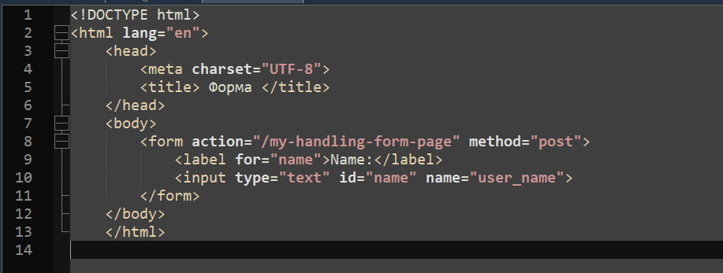
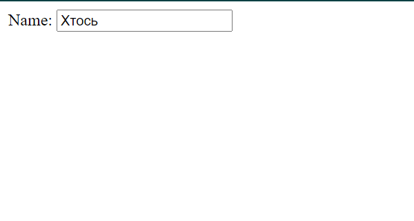

- Опис предметного середовища
- Тема, мета і
місце розташування Лабораторної роботи №1
- ВИСНОВКИ
|
Код вставки зображення та результат:


Теорія
Форма HTML являє собою документ, створений з використанням елементів HTML. Призначенням форми є збір інформації від користувачів. Після того як користувач заповнить форму і запускає процес її обробки, інформація з неї потрапляє в програму, що працює на сервері. Таким чином користувач може інтерактивно взаємодіяти з сервером Web через Internet.
Створення простої форми:
Теги "form" і "/form" задають початок і кінець форми. Починаючий форму тег "form" містить два атрибути:
action і method. Атрибут action містить адресу URL сценарію, який має бути викликаний для обробки форми. Атрибут method вказує браузеру, який вид HTTP запиту необхідно використовувати для відправки форми; можливі значення POST і GET.
Зауваження
Головна відмінність методів POST і GET полягає у способі передачі інформації. У методі GET параметри передаються через адресний рядок, тобто по суті в HTTP- заголовку запиту, в той час як у методі POST параметри передаються через тіло HTTP-запиту і ніяк не відбиваються на вигляді рядка
Якщо будемо передавати методом POST, то дані будуть передані приховано від користувача.
Тег "form" також підтримує глобальні атрибути в HTML.
Глобальні атрибути в HTML:
ираються дані. Розглянемо параметри(атрибути) тега "input":
1. accesskey - задає комбінацію клавіш для активації / фокусування елемента.
2. class - вказує одне або кілька класів для елемента (відноситься до класу в таблиці стилів).
3. contenteditable - вказує, чи вміст елемента редагується чи ні в таблиці стилів.
4. contextmenu - задає контекстне меню для елемента. Контекстне меню з'являється, коли користувач клацає правою кнопкою миші по елементу.
5. data - використовується для зберігання призначених для користувача даних, закритих для сторінки або додатки.
6. dir - задає напрямок тексту для вмісту в елементі.
7. draggable - вказує, чи елемент перетягується чи ні.
8. dropzone - вказує, чи копіюються перенесені дані, переміщаються вони і чи пов'язані вони при видаленні.
9. hidden - вказує, що елемент ще не є або більше не є релевантним.
10. id - задає унікальний ідентифікатор для елемента.
11. spellcheck - ознака перевірки орфографії і граматики елемента.
12. style - задає вбудований стиль CSS для елемента.
13. tabindex - задає порядок табуляції елемента.
14. title - вказує додаткові відомості про елемент.
15. translate - вказує, чи повинно вміст елемента бути переведено чи ні.
16. lang - вказує мову вмісту елемента.
Атрибути тега form:
- Action - шлях до документа (URL), що містить скрипт виконання (обробник веб-форм).
- Method - з допомогою цього атрибута забезпечується спосіб передачі даних. Власне, їх всього два: get і post, які і є параметрами.
- Name - якщо ви використовуєте на сайті кілька форм, то для кожної потрібно придумати унікальну назву для її ідентифікації, дане найменування і буде служити значенням цього атрибуту, який є необов'язковим.
- Accept-charset - визначає кодування, в якій сервер повинен обробляти отримані дані. Як значення (параметра) даного атрибута виступає назва використовуваного стандарту (UTF-8, Windows-1251 і т.д.).
- Autocomplete - активує автозаповнення форми браузером, який в цьому випадку залишає в пам'яті зміст вперше заповнюваних полів (частіше логіна і пароля), а при необхідності в подальшому введення цих даних автоматично їх вставляє в потрібні місця. Має всього два параметри: on - автоматичне заповнення включено, off - вимкнено.
- Enctype - задає метод кодування введених в форму даних перед відправкою їх на сервер.
- Novalidate - це логічний атрибут (значення відсутні), який скасовує перевірку на коректність введеної користувачем інформації, що відправляється на сервер.
- Target - результат обробки відправлених на сервер даних, внесених користувачем в форму, розташовану на сторінці, повертається в формі HTML документа, який завантажується у вікно браузера, яке визначається значенням атрибута target.
Тег "input" визначає якраз саму форму, використовується для визначення області всередині форми, де збираються дані. За допомогою HTML теґу input можна створити наступну елементи форми (За це відповідає атрибут type):
* text- текстове поле.
* password- поле з паролем.
* radio- перемикач.
* checkbox- прапорець.
* hidden- приховане поле.
* button- кнопка.
* submit- кнопка для відправки форми.
* reset - кнопка для очищення форми.
* file- поле для відправки файлу.
* file- кнопка із зображенням.
Тег "textarea" визначає область в яку можна вводити декілька рядків тексту.На відміну від тега input у текстовій області textarea дозволяється робити переноси рядків і вони будуть збережені при відправленні даних на сервер.
Атрибути:
* autofocus- автоматичне отримання фокусу.
* cols- ширина поля в символах.
* dirname- визначає напрямок тексту.
* disabled- блокує доступ і зміну елемента.
* maxlength- максимальне число введених символів.
* name- ім'я поля, призначене для того, щоб обробник форми міг його ідентифікувати.
* placeholder- додає текст підказку.
* readonly - робить поле неактивним.
* required- поле обов'язкове для заповнення.
* rows- висота поля.
* wrap - параметри перенесення рядків.
Тег "button" створює на веб-сторінці кнопку. Кнопка, що створена за допомогою елемента button може розміщуватися поза межами форми, але щоб у неї була можливість відправляти дані на сервер, необхідно, щоб кнопка розміщувалася в формі.
Атрибути:
* autofocus- кнопка отримує фокус після завантаження сторінки.
* disabled- блокує кнопку.
* form- пов'язує кнопку з однією або декількома формами.
* formaction- задає адресу, на яку будуть відправлені дані форми при натисненні на кнопку. Тільки для `type="submit"`.
* formenctype- спосіб кодування даних форми перед відправкою форми на сервер.
* name- унікальне ім'я кнопки.
* formmethod- метод пересилання даних форми. Тільки для type="submit".
* formnovalidate - скасовує перевірку форми на коректність.
* required- поле обов'язкове для заповнення.
* type- встановлює тип кнопки: звичайна; для відправки даних форми на сервер; для очищення форми.
* value - початкове значення кнопки.
Тег "select" дозволяє створити елемент інтерфейсу у вигляді списку, що розкривається, а також список з одним або множинним вибором.Кожен пункт створюється за допомогою тега option, який повинен бути вкладений в контейнер select.Якщо планується відправляти дані списку на сервер, то потрібно помістити елемент select всередину форми. Це також необхідно, коли до даних списку йде звернення через скрипти.
Порада: Тег "select" не може містити в собі тега label(мабуть і інші теги теж). Щоб здійснити вибірку мітки (тега label), потрібно виносити цей елемент за межі елемента select
Нотатка: Ширина списку визначається шириною самого великого тексту вкладеного в дочірній елемент option.
Порада: Перший пункт в списку, як правило, відображається як обраний, але ви зможете додати до будь якого option атрибут selected щоб задати даний варіант як обраний.
Атрибути:
* autofocus- встановлює фокус після завантаження сторінки.
* disabled- блокує доступ та зміну елемента
* form- повʼязує список з однією або з кількома формами.
* multiple- множинний вибір
* size- кількість видимих елементів спску.
* name- імʼя випадаючого списка
* required- обовʼязково для вибору перед відправкою форми.
Тег "option" призначений для створення пункту списку для тега select чи datalist. Якщо планується відправляти дані списку на сервер, то потрібно помістити елемент select всередину форми. Це також необхідно, коли до даних списку йде звернення через скрипти.
Нотатка: Тег option можна використовувати без будь-яких атрибутів, але зазвичай потрібен атрибут value , який буде вказувати, яке значення потрібно відправити на сервер.
Порада: Якщо у вас є довгий список опцій, ви можете згрупувати пов'язані варіанти за допомогою тега optgroup.
Атрибути:
* label- вказує короткий опис для пункту списку.
* disabled- відключає пункт списку.
* selected- задає пункт списку, який буде обраний за дефолтом.
* value- задає значення елементу `select`, яке буде обробляти скрипт.
Тег "optgroup" являє собою контейнер для групування елементів option. Особливістю optgroup є те, що він не виділяється як звичайний елемент списку, назва групи виділяється за допомогою жирного накреслення, а всі елементи, що входять до цієї групи зміщуються вправо від свого початкового положення.
Атрибути:
* label- назва групи.
* disabled- блокує доступ до групи списка.
Тег "fieldset" використовується для групування пов'язаних елементів в формі. Таке групування полегшує роботу з формами, що містять велику кількість даних, наприклад, один блок може бути призначений для введення текстової інформації, а інший - для прапорців.
Атрибути:
* title- додає пояснювальний текст.
* disabled- блокує поля форми в групі.
* form- пов'язує групу з формою.
* name- унікальне ім'я.
Тег "label" вслужить текстової міткою для елемента input. За своїм виглядом мітка нічим не відрізняється від звичайного тексту, але завдяки їй користувач може вибрати елемент форми кліком по тексту, розташованих у межах елемента label, а не по самому елементу input.
Атрибути:
* form- задає одну або кілька форм до яких належить мітка.
* for- ідентифікатор елемента, з яким буде пов'язано мітку.
|